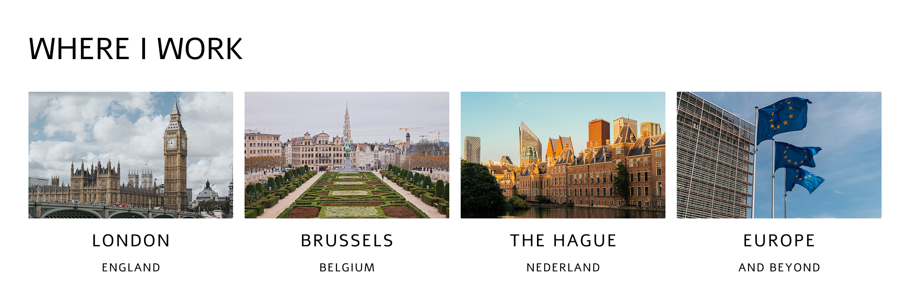

About
Professional background at the intersection of language, international affairs, institutional practice, legal process and decision-making.
View pageUkrainian and Russian Conference Interpreter and Translator
Legal, institutional, financial, regulatory, and executive matters
With over 20 years of experience, I am trusted by European institutions and international organisations, law firms and legal-sector bodies, UK government departments and regulatory bodies, diplomatic representations, businesses, and private clients.
“Professional reliability, strong subject-matter understanding, and the ability to convey nuanced economic, financial, legal, and regulatory concepts clearly and accurately across languages.”International Monetary Fund (2013-)
Professional background at the intersection of language, international affairs, institutional practice, legal process and decision-making.
View pagePreparation, institutional awareness, discretion and professional judgement that help communication proceed without unnecessary friction.
View pageSimultaneous, consecutive and whispered interpreting for legal, governmental, diplomatic, institutional and private-sector settings.
View pageWritten translation, revision and proofreading where accuracy, consistency and accountability are essential.
View pageSelected work across European governance, multilateral finance, United Nations programmes, UK government, judicial and arbitration contexts.
View pageDiscuss an assignment, availability, scope, language combination or the most appropriate interpreting mode and delivery format.
Get in touch
Optional second image below the first screen: a restrained architectural pause, not a decorative gallery moment.
A professional profile page for readers who need confidence quickly, not persuasion loudly.
A cross-system practice shaped by language, institutional procedure, legal process and international affairs.
Dmytro Yakubovskyy is a Ukrainian-English and Russian-English interpreter and translator working across the United Kingdom, Brussels, and internationally. His work regularly supports court and arbitration proceedings, regulatory hearings, ministerial and parliamentary meetings, international conferences, government negotiations, technical consultations, and discreet private assignments.
Academic training in translation and interpreting, international finance, and business administration complements practical experience across public and private sectors. Professional standards, ethics, confidentiality, preparation, and linguistic consistency form the baseline for every assignment, regardless of scale or format.
About image direction: restrained professional or architectural photograph. Personal portrait is optional.
The page should make the client feel that risk is being reduced before the assignment begins.
Smooth communication is rarely accidental. It follows from preparation, institutional awareness and proportionate judgement.
Materials, terminology, context, participants, sensitivities and practical details are clarified before they can affect the assignment.
Courts, arbitration panels, regulatory bodies, diplomatic meetings and boards each carry conventions around tone, pace and intervention.
In-person, remote and hybrid formats are managed with attention to rhythm, coordination, language flow and technical reliability.
Confidentiality and role boundaries are treated as inherent to the work, especially where legal, diplomatic or reputational stakes are high.
In practice, this approach is designed to reduce uncertainty before it affects the assignment. Briefing materials, terminology, format, participants, sensitivities, timing and technical arrangements are clarified early where possible.
During the assignment, the focus remains on continuity, appropriate register and faithful communication, so that participants can concentrate on the substance of the discussion rather than on the mechanics of interpretation.
How I Work can carry one quiet detail image: stone, corridor, court-adjacent architecture, or formal interior.
Service information is practical and restrained, with guidance where the client may need it.
Simultaneous, consecutive and whispered interpreting for legal, institutional, diplomatic, regulatory, conference and private-sector settings.
Written translation for documents that are read closely, relied upon in decision-making or form part of a formal record.
Revision and proofreading for translated and original texts, with attention to coherence, internal consistency, register and fitness for purpose.
This is the best place for two or three location photographs: Brussels, government buildings, institutional exteriors.
Based near London, working across the UK, Brussels, The Hague and internationally where the setting requires procedural confidence.
For EU, multilateral, regulatory and intergovernmental settings where language sits inside formal process.
Legal, arbitration, government, regulatory and private-sector assignments.
International matters requiring preparation, discretion and continuity across teams.
Proof should feel evidential, not decorative. No logo wall needed for the first version.
Engagements span European governance, multilateral finance, United Nations programmes, UK government departments, judicial proceedings and arbitration.
For text-heavy pages, the first view can show only the most relevant proof points. Each section expands when the reader wants more detail.
Includes work connected to European Union frameworks, Council of Europe, OSCE, European Parliament and related institutional dialogue where terminology, procedure and discretion matter.
This section can hold longer institutional references and endorsements while keeping the page calm and scannable on mobile.
Detailed examples and quotes can live inside the expanded state, preserving credibility without overwhelming the default view.
“Linguistic accuracy, a strong grasp of complex AML/CFT concepts, and professional composure.”
“A rare combination of intellectual acumen, self-motivation, easy communication, professionalism and efficiency.”
“Instrumental in facilitating communication between our client, counsel, the Court and other involved parties.”
If you require a Ukrainian or Russian interpreter or translator in London, elsewhere in the UK, or across Europe, please get in touch to discuss your assignment, availability, or scope. Enquiries from institutions, law firms, government departments, corporate teams, agencies, and private clients are welcome.
As a consultant interpreter and translator, I am happy to advise on the most appropriate mode and delivery configuration where helpful. If circumstances are not straightforward, a brief exchange is often sufficient to clarify considerations and ensure that the chosen approach supports the objectives of the meeting or document.
This information is not obligatory, but it helps ensure that practical arrangements can be addressed efficiently. Enquiries are handled promptly, subject to availability.
All communications and materials are treated in strict confidence and with professional discretion.
Email: [your email]
Telephone: [your number]